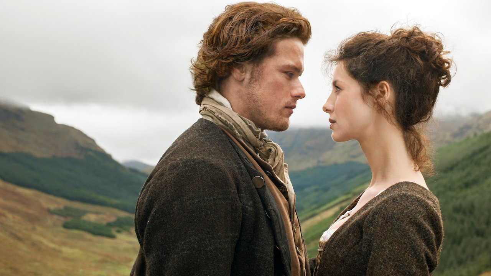

Outlander foi inspirada em "Doctor Who". A escritora Diana Gabaldon teve a ideia dos livros
‘Outlander’ após assistir a um episódio de ‘Doctor Who’. Com o segundo médico, Patrick Troughton, o
episódio apresentou Frazer Hines como acompanhante, um escocês das Terras Altas do século 18 chamado
Jamie McCrimmon. Segundo Diana Gabaldon, ela também tem o hábito de chamar seus personagens não
planejados de cogumelos. Foto: Fort William
Falta de tradução quando os personagens falam escocês gaélico. Principalmente na primeira
temporada,existem muitas cenas em que Claire ouve Jamie e seus companheiros falando em gaélico
nativo, mas o diálogo deles não é legendado para os telespectadores. De acordo com o produtor Ronald
Moore, ele queria que o público sentisse na pele como é ser Claire, incapaz de entender o que os
outros estão dizendo sobre ela.
Os castelos ecoseses são reais, embora tenham nome diferente. O castelo Leoch,a casa do tio Colum
Mackenzie de Jamie, é na verdade o castelo mediaval conhecido como Castelo Doune em Perthshire e foi
construído no final do século XIV. Além disso, Fort Willian é na verdade conhecido como Blackness
Castle, uma antiga fortaleza de artilharia que data do século XV.
Tranmissão atrasada no Reino Unido. Outlander estreou nos Estados Unidos em 9 de agosto de 2014, mas
chegou ao Reino Unido somente em março de 2015. A explicação para esse estranho atraso se devia ao
referendo de
independência da Escócia de setembro de 2014. Em 2015, houve rumores de que o presidente da Sony
Pictures havia trocado e-mails com o então primeiro-ministro, David Cameron. Especulou-se naquela
época que o assunto
das conversas seria adiar a tranmissão para depois da votação. Isso porque a série mostra escoseses
heroicos
lutando contra soldados britânicos, algo que poderia influenciar os eleitores a se tornarem
independentes do
resto do Reino Unido.
Foto: Castelo Leoch
A Batalha de Culloden ocorreu em 16 de abril de 1746. Os jacobistas foram de fato liderados pelo
Príncipe Bonnie Charlie para a batalha infame onde muitas vidas escosesas foram ceifadas naquele
dia. Uma luta
sangrenta que os jacobitas perderam rapidamente. Os clãs mudaram para sempre após essa batalha.
Assim como os escoseses, os personagens não usam nada por baixo dos kilts. Rumores dizem que os
atores que interpretam os escoseses fazem isso de maneira autêntica, ou seja, nenhuma roupa íntima é
usada por baixo deles. Além disso, o kilt de Jamie é o tartan Frasen-um padrão popular entre os fãs e usado em
tudo, desde lenços aos kilts completos.
Outlander fez o turismo aumentar na Escócia. Mais uma curiosidade sobre Outlander, é que a história
contada nos livros e na série alavancou o turismo na Escócia em 67%. Inclusive, a autora Diana
Gabaldon recebeu um prêmio de Contribuição Internacional para o Turismo Escocês em 2019.
Sam Heughan revelou a habilidade mais difícil que teve que aprender. Aprender a cavalgar e lutar com
espadas foram desafiadores para Sam Heughan, mas aprender gaélico, segundo ele foi o mais difícil de
todos. Outra curiosidade, é que o arrojado guerreiro escocês foi inicialmente rejeito para o papel, mas
conquistou Gabaldon depois que ela assistiu seus primeiros testes.

Foto: Casal principal Jamie e Claire
Na terceira temporada , os navios usados quando Claire e Jamie zarparam foram emprestados foram
"emprestados" da série Black Sails,também da Starz. Nessa série, a história acompanha as aventuras do Capitão
Flint e seus homens,20 anos antes dos acontecimentos do clássico de Robert Louis Stevenson, "A Ilha do Tesouro."
A história por trás do tema de Outlander. A música-tema excêntrica de Outlander foi arranjada pelo
compositor Bear McCreary, mesmo compositor de The Walking Dead, Da Vinci Demon´s, Black Sails e
Battlestar Gallactica. Dessa maneira, ela foi inspirada por uma música folk tradicional
escosesa,“The Skye Boat Song”. As letras, que são assustadoramente relevantes para a história de
Claire, são graças ao escritor escocês do século XIX, Robert Louis Stevenson.
Elenco da série é responsável pela sua própria roupa. Cada ator de Outlander que interpreta um dos
membros do clã personaliza seu próprio kilt, vestindo-o de uma maneira individual que o difere dos
demais membros do elenco. Dessa forma, isso os ajuda a entrar melhor no personagem e também dá um pouco
mais de autenticidade a história.
Frank e Claire trocaram cartas antes de gravar a série. Para ajudar a aliviar o constrangimento e
construir intimidade nas cenas íntimas, Balfe e Tobias Menzies – que interpreta o marido moderno de
Claire, Frank arquitetou um plano genial. Eles se escreveram cartas como Frank e Claire antes de
suas cenas quentes no episódio piloto.
Controle sobre a série. Uma das maiores curiosidades sobre Outlander é que Diana Gabaldon tem grande
influência e controle criativo sobre a série. Mas, isso é totalmente explicável, considerando que
ela ainda está escrevendo os romances. Assim, Diana vê todos os roteiros e recebe os diários dos
produtores.
Ator principal usa gengibre no cabelo.Heughan é naturalmente louro. No entanto, ele afirma que usa
gengibre e pinta o cabelo a cada dois episódios para manter as madeixas com aspecto natural.
Gravações em terras estrangeiras. Embora a Escócia seja o cenário óbvio de escolha para gravar uma
série escosesa, a produção na verdade considerou locações na Europa Oriental e Nova Zelândia como
cenários principais também. Na verdade, a Paris da 2º temporada é, na verdade, Praga-capital da
República Tcheca.
Foto: Rannoch Moor